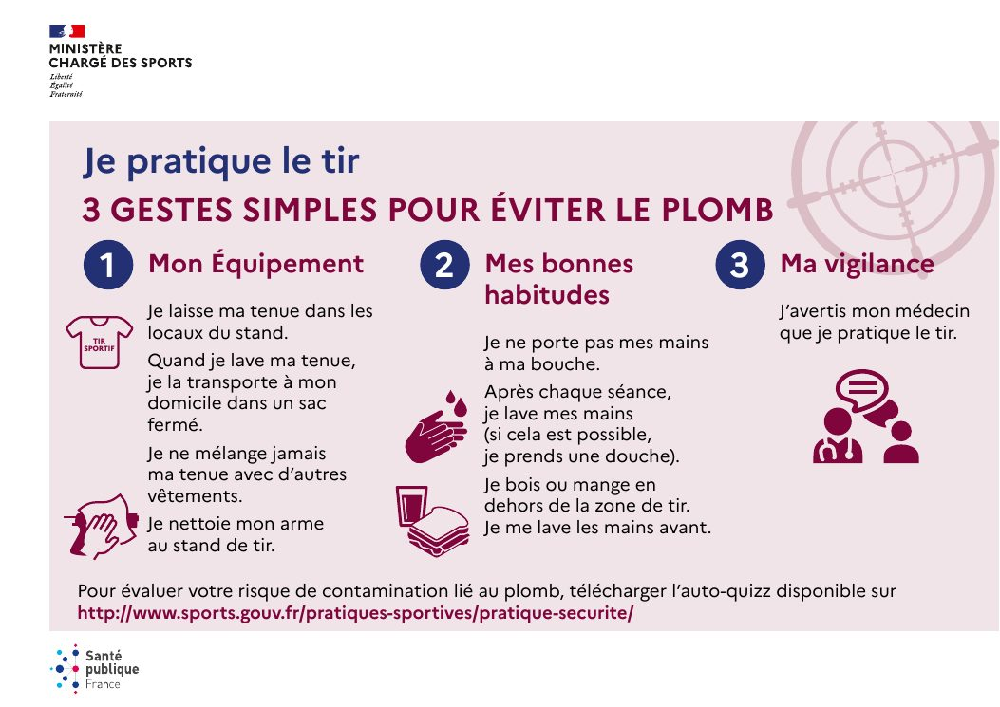

4Préparation physique
Tenir l'arme, rester stable et durer tout un match : la condition physique du pistolier.
Le tir, un sport physique ?
Oui, mais pas au sens d'un sport d'effort intense. Un pistolier lève un pistolet d'environ 1 à 1,5 kg à bout de bras, des dizaines de fois, en restant parfaitement immobile. Ce qui compte, c'est :
Les principes de la préparation physique
La préparation physique vise cinq objectifs :
Charge et récupération
Un entraînement fait d'abord baisser un peu la forme, puis le corps récupère et remonte au-dessus de son niveau de départ : c'est la surcompensation. Il faut donc alterner des phases de travail et des phases de repos.
Au fil de la saison
| Début de saison | Phase intensive : on construit la condition physique. |
| Milieu de saison | Progression graduelle. |
| Avant les compétitions | Mode entretien : on garde les acquis sans se fatiguer. |
4 principes à retenir
- La préparation physique complète l'entraînement au tir, elle ne le remplace pas.
- Son intensité varie selon la période de la saison.
- Elle s'adapte à chaque tireur.
- La régularité et la progression comptent plus qu'une grosse séance ponctuelle.
Article MonTirSportif : La préparation physique ↗
Les exercices utiles
La tenue de l'arme
L'exercice le plus spécifique : il renforce exactement les muscles utilisés au tir.
- Tenir l'arme (vide, en sécurité) en position de visée 20 à 30 secondes, puis repos équivalent. Répéter quelques fois.
- Augmenter progressivement la durée et le nombre de répétitions au fil des semaines.
- Garder une bonne position : épaule basse, bras tendu, sans se cambrer.
Le gainage
- Planche sur les avant-bras : corps aligné, ventre serré, 20 à 30 secondes au début.
- Planche latérale de chaque côté.
- Qualité avant durée : arrêtez dès que le dos se creuse.
Épaules, bras et poignet
- Élévations latérales avec une petite charge légère (bouteille d'eau, haltère léger) ou un élastique.
- Rotations d'épaule avec élastique, pour les muscles stabilisateurs.
- Poignet : flexions et extensions avec une charge légère, pour un poignet bien verrouillé.
- Travail léger et répété : on cherche l'endurance, pas la force maximale.
L'équilibre
- Tenir sur un pied, puis sur l'autre, d'abord yeux ouverts puis yeux fermés.
- Se tenir en position de tir, yeux fermés, et sentir les petites oscillations du corps pour apprendre à les réduire.
- Le yoga ou le Pilates sont d'excellents compléments.
L'endurance générale
- Marche rapide, vélo, natation ou course douce, 2 à 3 fois par semaine.
- Une meilleure endurance aide à garder un rythme cardiaque plus bas et à mieux récupérer pendant un long match.
Hors du pas de tir : 4 familles d'exercices
1. Le cardio
30 minutes à 1 heure, à allure modérée : course à pied, vélo, natation, corde à sauter.
Pour la condition physique générale, la récupération… et la motivation.
2. La tonicité
Gainage, abdominaux, lombaires ; jambes (la chaise, les squats) ; haut du corps avec des élastiques.
Pour la stabilité, et pour limiter tendinites et douleurs lombaires.
3. Coordination et proprioception
Planche de Freeman, fit ball, tapis en mousse, exercices les yeux fermés.
Pour l'équilibre, le relâchement musculaire et la conscience de son corps.
4. Les étirements
Bas du corps, dos et haut du corps, en douceur.
Pour la récupération et la prévention des blessures.
Article MonTirSportif : La préparation physique ↗
Sur le pas de tir : la préparation physique au pistolet
Proprioception et renforcement
Endurance : la grille des tenues
Tenues et tir à sec face à un mur, avec une charge qui augmente au fil des semaines :
| Période | Levers | Tenue | Pause |
|---|---|---|---|
| Octobre | 10 | 8 s | 15 s |
| Fin octobre | 12 | 10 s | 12 s |
| Novembre | 15 | 12 s | 10 s |
| Fin novembre | 18 | 15 s | 8 s |
Exemple en novembre : 18 levers, 15 secondes de tenue, 8 secondes de pause, le tout répété sur 3 séries.
Article MonTirSportif : La préparation physique ↗
Une semaine type
| Jour | Contenu |
|---|---|
| Séance de tir | Échauffement, tir à sec, puis tir réel au club. |
| Un autre jour | 20 à 30 minutes : gainage, épaules, équilibre, et quelques séries de tenue. |
| Un ou deux jours | Activité d'endurance douce (marche, vélo, natation). |
| Chaque jour | Quelques minutes de mobilité du cou et des épaules, et de visualisation. |
Échauffement et hygiène de vie
S'échauffer
Avant chaque séance : rotations du cou, des épaules et des poignets, quelques mouvements de bras, puis tir à sec avant les premiers coups réels.
Sommeil et hydratation
La fatigue et la déshydratation dégradent la vision et la stabilité. Buvez régulièrement pendant les longues séances et les compétitions.
Les excitants
Café, thé fort ou boissons énergisantes peuvent accentuer les tremblements. Testez à l'entraînement ce qui vous convient, et ne changez rien le jour d'une compétition.
L'échauffement en 10 minutes
L'échauffement prépare le corps et l'esprit, améliore les sensations et évite courbatures et crampes, sans entamer son énergie. Dix minutes suffisent :
- Tourner la tête de droite à gauche plusieurs fois.
- Bras tendus, petits cercles avec les mains ouvertes.
- Au-dessus de la tête, tirer doucement sur un coude avec la main opposée.
- Mains jointes, faire pivoter les poignets.
- À hauteur du ventre, tirer doucement sur un coude avec la main opposée.
- Rotations du bassin.
- Bassin fixe, rotations du haut du corps.
- Debout, toucher le pied opposé avec la main, jambes tendues (sans forcer).
- Pieds joints, mains sur les genoux, rotations des genoux.
- Rotations des chevilles.
Fiche Bensport : Le guide du pistolier ↗
Mesurer et améliorer sa stabilité
Une bonne stabilité sans bon lâcher ne vaut rien. Le mouvement en cible se juge à son amplitude et à sa vitesse : on peut bouger lentement dans une zone large, ou vite dans une zone étroite.
- Mesurer : debout sur une grille tracée au sol, avec un pendule accroché à la ceinture ; un partenaire observe ou filme l'amplitude. Les simulateurs comme SCATT montrent les mouvements de l'arme.
- Améliorer : chaussures plates à semelle rigide (de tir ou d'haltérophilie), visées longues pieds joints, pieds croisés ou sur un pied (sans tirer), yoga.
- Ne marquez pas la trace de vos pieds au sol : le corps se tasse pendant la séance et la position évolue. Le règlement interdit d'ailleurs les marques permanentes.
Souplesse, gainage, endurance
- La stabilité repose sur le relâchement musculaire et une souplesse minimale : « le roseau plie mais ne rompt pas ».
- Associer assouplissements et gainage (dos, abdominaux, jambes).
- On cherche l'endurance, pas le volume musculaire ; évitez une musculation déséquilibrée entre les deux côtés du corps.
- Ne verrouillez pas le coude en hyperextension : à la longue, gare à l'épicondylite.
- Pendant les longues séances, faites de petits mouvements de relâchement pour éviter que la position se « tétanise ».
Fiche Bensport : La position du pistolier à la loupe ↗
Le plomb et la plombémie
Les plombs, les balles et les fumées de tir contiennent du plomb. On le retrouve en poussière sur les tables, au sol, sur les mains et les vêtements. Avalé ou respiré, il s'accumule dans l'organisme, surtout dans les os : c'est le saturnisme. Tous les stands en activité sont à considérer comme contaminés, mais quelques gestes simples suffisent à s'en protéger, ainsi que sa famille.
Ne pas avaler de poussière de plomb
Se laver vigoureusement les mains (et les ongles) dès la fin de la séance, avant de les porter à la bouche. Ne pas manger, boire, fumer ni téléphoner avant de s'être lavé.
Ne pas rapporter le plomb chez soi
Des vêtements et des chaussures réservés au tir, transportés dans un sac fermé et lavés à part. Nettoyer son poste avec une microfibre, rangée dans un sac hermétique et lavée avec la tenue.
Informer son médecin
Lui dire que l'on pratique le tir, pour qu'il puisse prescrire si besoin un dosage du plomb dans le sang : la plombémie.

Sur le pas de tir
- Pas de nourriture, de boisson, de chewing-gum ni de cigarette ; se laver les mains et le visage avant.
- Pour le nettoyage ou le ramassage des douilles : gants et masque, jamais de balayage à sec ni de soufflette.
- Les enfants ne jouent pas par terre et ne portent rien à la bouche.
En partant, puis à la maison
- Mains, ongles et visage lavés (au minimum avec une lingette).
- Changer de vêtements et de chaussures avant de rentrer ; chaussures et mallettes essuyées au chiffon humide.
- Douche complète, cheveux et barbe compris ; tenue lavée à part (un cycle rapide suffit).
- Nettoyer ses armes au stand, ou loin de la famille et des pièces de vie.
Pendant le tir je ne mange pas, après le tir je me lave les mains
« Pendant le tir je ne mange pas, après le tir je me lave les mains » : la règle d'hygiène à retenir, en vidéo. Version imprimable ↗
La plombémie
La plombémie mesure la quantité de plomb qui circule dans le sang, en microgrammes par litre (µg/L), par une simple prise de sang. Seule une partie du plomb circule : le reste est stocké dans les os et peut être relâché lors d'une grossesse, de l'allaitement, d'une fracture ou d'une immobilisation prolongée.
| Seuil | Ce qu'il signifie |
|---|---|
| 25 µg/L | Au-delà, le laboratoire déclare le résultat au centre antipoison et à l'ARS, qui recherchent l'origine de l'exposition et organisent un suivi. |
| 50 µg/L | Chez un mineur, définit un cas de saturnisme. |
| 45 / 100 / 200 µg/L | Valeurs d'alerte du code du travail (femme en âge de procréer / femme / homme) : surveillance médicale renforcée des salariés. |
| 300 / 400 µg/L | Valeurs limites du code du travail (femme / homme), abaissées par étapes jusqu'à 150 µg/L au 1er janvier 2029. |
Parlez de votre pratique à votre médecin : c'est lui qui juge de l'intérêt d'une plombémie.
La consultation de dépistage et la plombémie sont gratuites depuis 2005.
Surveillance au moins annuelle : la médecine du travail en fixe la fréquence.
Nettoyage du stand, ou plus de 4 h par jour au pas de tir (animateur, formateur, arbitre) : un suivi est conseillé.
Femmes et tir
Les bons gestes, présentés par Pauline Jung, carabinière
- En âge d'avoir un enfant : appliquer strictement les gestes et signaler le tir au professionnel de santé qui vous suit.
- Pendant la grossesse, il prescrit une plombémie et peut proposer un dosage au cordon à la naissance.
- Au dernier trimestre, éviter d'exposer le fœtus aux détonations répétées : son système auditif est fragile.
- L'allaitement reste en général conseillé si la plombémie est basse ; à vérifier avec le médecin.
Pour les clubs : aménager et nettoyer le stand
Tables et sols lessivables (mélaminé, linoléum, béton peint, carrelage) : plus de moquette.
La zone la plus chargée en plomb : bande de béton peint sous les cibles, rameneurs électriques, pièges à plombs.
Uniquement à l'aspirateur à filtre H13 ou à l'humide (microfibre, balai rasant) ; un grand nettoyage par semestre.
Pour nettoyer, collecter ou fondre le plomb : combinaison jetable, surchaussures, masque FFP3, lunettes, gants à manchettes.
Les masques anti-poussière de bricolage et les masques chirurgicaux ne protègent pas du plomb. La barbe réduit beaucoup l'efficacité d'un masque.
Les fiches du plan de prévention FFTir
Ces informations ne remplacent pas l'avis de votre médecin. Questions : papep@fftir.org · 01 58 05 45 45. Un doute après une plombémie ? Les centres antipoison répondent 24 h/24 (centres-antipoison.net ↗).
D'après les fiches ressources du Plan de prévention de l'exposition au plomb (PaPEP) de la FFTir, version du 21/10/2025, et l'affiche Ministère des Sports / Santé publique France · fftir.org ↗
Le dopage
Bêtabloquants interdits au tir, CBD, compléments alimentaires, autorisation d'usage à des fins thérapeutiques : tout ce qu'un tireur doit savoir pour ne pas risquer un contrôle positif par accident.
La gymnastique des yeux
Les yeux sont des muscles très sollicités au pas de tir (accommodation sur le guidon, alternance des plans). Des exercices d'orthoptie simples permettent de les entretenir et de limiter la fatigue visuelle. En cas de gêne, consultez un orthoptiste ou un ophtalmologiste.
Ce que l'échauffement change dans le corps
Sans échauffement, le résultat est faible et instable, et le risque de blessure (muscles, tendons, articulations) augmente.
Les effets physiologiques
- Des muscles plus chauds, plus élastiques, qui se contractent et se relâchent mieux.
- Plus de sang et d'oxygène vers les muscles.
- Un influx nerveux plus rapide : meilleure coordination, meilleur temps de réaction.
- Des articulations mieux lubrifiées, des mouvements plus fluides.
- Un cœur et une respiration qui montent progressivement en régime.
Les effets psychologiques
- Un moment pour se concentrer sur la séance ou le match.
- Se visualiser en train de réussir.
- Faire baisser l'anxiété, gagner en vigilance.
Voir aussi l'échauffement en 10 minutes et l'échauffement sur carton blanc.
Les levées d'arme, un programme progressif
Lever l'arme, tenir, reposer, recommencer. Une ou deux fois par jour, en commençant modestement : seule la régularité paie. Pas d'arme sous la main ? Une bouteille d'eau fait l'affaire. Chaque vidéo sert de minuteur.
10 levées de 10 secondes
15 levées de 10 secondes
20 levées de 10 secondes
5 levées de 15 secondes
10 levées de 15 secondes
15 levées de 15 secondes
20 levées de 15 secondes
5 levées de 20 secondes
10 levées de 20 secondes
15 levées de 20 secondes
20 levées de 20 secondes
Pistolet 10 m : comment gagner en stabilité ?
Sur les sites MonTirSportif
MonTirSportif – https://pistol.montirsportif.com/preparation-physique.html